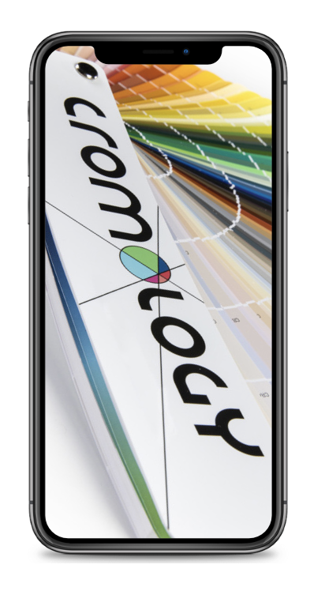

Scenario 01
Retail experience audit · Field research · University project
Evaluating retail experience through mystery shopping
A field research project assessing store quality, staff competence, product visibility and customer support across Cromology retailers.
This was a university research project developed around the retail experience of Cromology products. It should not be presented as professional consultancy or official work commissioned by Cromology.
01
Business question
The question behind the visits
What makes a retail experience reliable, useful and worth returning to?
The audit examined the practical moments that shape a store visit: order and cleanliness, product visibility, pricing clarity, staff welcome, product knowledge, problem solving, technical advice, customer support and telephone assistance.
How consistently were Cromology products and customer needs managed across different retailers?
Mystery shopping design
We designed realistic scenarios, not generic store visits.
Scenario 02
Flatmates in a rented apartment
Assess clarity, accessibility and solution finding.Scenario 03
Friends repainting a humid garage
Assess technical advice and product knowledge.Scenario 04
Mystery call
Assess telephone assistance and follow-up support.Customer journey audit
The assessment followed the full retail journey.
- Arrival
- Store environment
- Shelf navigation
- Staff interaction
- Technical advice
- Checkout
- Mystery call
- Overall score
Scorecard
Turning observations into comparable evidence
Positive characteristics received positive scores, while absent or negative characteristics received negative scores. Ratings on a 1–10 scale were normalised and weighted totals were used to compare stores.
Display clarityCromology visibilityStaffPromotionsCleanlinessServicesOverall satisfactionStore experience
Verification layer
Testing consistency, not relying on one impression
- First visit
- Different scenario
- Second shopper pair
- Confirmation visit
- Comparison of observations
Giovanni and Pietro repeated the analysis in three stores to verify whether the first impressions remained consistent.
Store ranking
Overall store evaluation
Weighted score based on the mystery shopping assessment framework.
Best performer
What made Eurocolor stand out?
The strongest result did not come from one isolated factor. It came from consistency across product visibility, staff competence and customer support.
- Clear product display
- Broad Cromology assortment
- Knowledgeable staff
- Positive in-store and phone support
Store evidence
Three patterns made the comparison useful.
Strong overall performer
Eurocolor
Consistent experience across the assessment framework.Strong staff, weaker visibility
Salvadori Ferramenta
Service strengths alongside a visibility opportunity.Adequate experience, improvement needed
Nuova Rivas
A case for focused store-level improvement.Cromology app
Supporting the customer after the store visit
The proposal was to promote the Cromology app more consistently: support colour selection, simplify decisions for younger or less experienced customers, and connect physical retail with a digital tool.
The recommendation was based on the observation that the app was presented in only one of the stores visited.

Strategic recommendations
Operational suggestions grounded in field evidence.
Store experience
- Clearer product and price communication
- More consistent presentation
- Stronger visibility of Cromology products
Staff enablement
- Support staff with clearer materials
- Encourage consistent promotion of available services
- Improve customer guidance
Digital support
- Promote the Cromology app
- Provide complete colour palettes
- Connect physical advice with digital visualisation
Result
From field observation to operational recommendations
Mystery shopping→Structured scorecard→Store comparison→Verified observations→Practical recommendations
The output was a structured evaluation framework, a ranked comparison of six retailers, identification of store-level strengths and weaknesses, and recommendations on product visibility, staff support and digital tools.
My contribution
Learning from the store floor.
- Field research
- Confirmation visits
- Structured observation
- Comparison of store experience
- Interpretation of findings
- Communication of recommendations
This project strengthened my understanding of how customer experience can be evaluated through structured observation, not only through surveys or transactional data.
Limitations
Useful evidence, with clear boundaries.
- Small number of stores
- Convenience-based store selection
- Subjective elements in scoring
- Different evaluators
- Limited research time
- No post-intervention validation
Verification visits were used to reduce, not eliminate, observer bias.